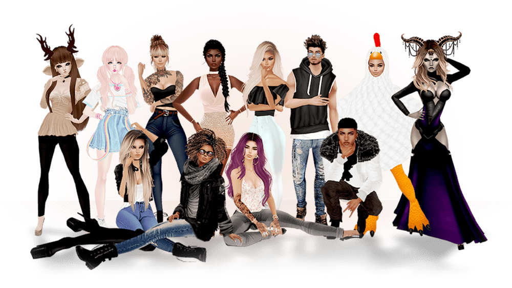

IMVU 对比评测：在虚拟社交赛道里，它凭什么还能站得住
从虚拟聊天到直播变现，把 IMVU 放进同类产品的坐标系里看清楚它的差异化优势与取舍。
虚拟社交这个赛道从不缺玩家。从早年的 Second Life 到后来的 Roblox、Rec Room，再到各家大厂押注的元宇宙项目，每隔两年就有人说「这次虚拟世界真的要成了」。但真正活了十几年、还在持续迭代用户结构的，掰着手指头数得出来。IMVU 就是其中一个——而且它走的路跟别人都不太一样。
这篇文章不打算把整个虚拟社交市场盘一遍，只聚焦一个问题：如果你今天想进这个品类，IMVU 到底值不值得装？它跟同类相比，好在哪、又绕不过哪些门槛？
先看定位：它跟别人不在一个跑道上
很多人第一次上imvu官网注册时会觉得「这不就是个 3D 聊天工具吗」。但稍微深入一点就会发现，它的产品重心从一开始就不在「虚拟世界」的宏大叙事上——而是在「虚拟穿搭 + 轻量社交」这条窄而深的路径。
Roblox 靠 UGC 游戏生态吃饭，玩家的核心行为是「玩别人做的东西」；Rec Room 主打活动型社交，多人一起做件事（看电影、玩小游戏）是主要场景；Second Life 试图做一个完整的虚拟经济系统，但它的门槛和复杂度让绝大多数普通用户望而却步。
imvu下载搞定客户端进去之后，你会发现它的产品逻辑很朴素：给你一个分身、一个房间、一套穿搭系统，剩下的你自己玩。它不强迫你去做任务、闯副本、攒经验值——你想聊天就聊天，想拍照就拍照，想开直播就攒粉，想做创作者就卖东西。这种「什么都能做但什么都不强制」的设计，反而让它在虚拟社交里占了一个独特的位置：最接近真实生活里「出门社交」的感觉。
差异化一：穿搭系统是它的护城河
说 IMVU 是「穿搭驱动的虚拟社交」一点不为过。整个平台的内容生产核心、创作者经济、甚至社交关系的初始破冰，都围绕这个点展开。
分身的捏人换装系统精度远高于同类产品——从发型颜色的 RGB 微调、睫毛的密度、到衣服的材质和光影效果，可调节的维度细到令人发指。社区里有大量专门做穿搭的创作者，他们产出的单品（上衣、裙子、鞋子、配饰）是平台内最主要的消费内容。

这套系统带来了一个连锁效应：拍照模式成为平台内容传播的核心工具。你在房间里拍一张构图讲究的穿搭照，发到动态广场（Feed），就能收获点赞、评论、甚至让陌生人主动加你好友。想把这套捏人和拍照的细节摸透，imvu文档里有完整的操作指南。对于很多玩家来说，IMVU 本质上是一个「低压力的虚拟展示空间」——不像微博小红书那样有容貌焦虑，也不像其他虚拟平台那样要求你有游戏技能，只要审美在线就能获得存在感。
差异化二：Live Rooms 把「房间」升级成了「直播间」
IMVU 近年最重要的产品更新是 Live Rooms——把普通聊天房间升级成了可以几百人围观、最多十人上麦表演的直播场。这个功能推出之前，虚拟社交产品里的「大型活动」要么靠 Discord 语音频道，要么靠游戏内的服务器群组，体验都很割裂。
Live Rooms 的角色划分很清晰：主播（Host）掌控全场，上镜者（Presenter）最多十人、以分身形态真实出现在场景中，观众则数百人不等、可以浏览聊天但不占场景位置。观众想上镜时，点一下画面左上角的图标申请就行（有空位的前提下）。
这个设计的聪明之处在于，它天然支持从「熟人房间」升级到「公开活动」的路径——你可以先跟几个朋友在房间里练一练，成熟了就把房间升级成 Live Room 办公开活动。官方社区里常见的玩法包括时装秀（创作者展示新品、观众实时投票）、问答脱口秀、大型派对（婚礼、生日会），甚至商品发布（直播中跳转到商店）。
互动工具也配得很全：弹幕聊天、实时投票（Polling）、媒体播放、主播语音广播（VIP 专属）、还有打赏（Tipping，起赏 500 Credits）——这套组合拳下来，观众不只是看，还能深度参与。更重要的是，看 Live Room 不需要任何订阅，只有想当主播才需要 VIP 资格（Gold 档起步），这个门槛设置让观众端的流量池足够大。
差异化三：创作者经济是真金白银
很多虚拟社交产品都有创作者计划，但大多停留在积分内循环——你做的东西有人买，收到的是平台内的货币，还是在平台里花。IMVU 的 Earn Money Program 不一样，它提供了官方现金通道：你卖商品的利润可以按官方汇率（每 1000 积分的销售利润折算 0.40 美元）结算成真实货币，满 50 美元就能提现到 PayPal。
资格门槛也不低——需要 Platinum、Diamond 或 Emerald 档 VIP，Gold 档不行；提现前还要完成账号验证和商品目录审核。汇率虽然不算高，但好处是官方统一确定、长期稳定，不需要操心早期转售商行那种汇率浮动的问题。
这条变现路径的意义远不止于「能赚钱」——它让 IMVU 的创作者生态里同时存在三类人：纯穿搭玩家（拍照涨粉）、兼职创作者（卖单品赚零花）、全职创作者（开直播做活动变现），彼此之间的转化路径是通的：先在动态发穿搭照积累关注，再做创作者卖东西，最后攒够粉丝开直播。这个梯度感是同类产品中少见的。
它的取舍：优势背后的代价
说了这么多好的，也得讲讲绕不过去的门槛。IMVU 的设计选择注定它不可能覆盖所有人。
上手门槛偏高。3D 捏人系统虽然精细，但调起来也麻烦——新用户花半小时在脸上、头发、衣服上折腾是常态。相比之下，Roblox 一套默认皮肤就能直接玩，Rec Room 更是连捏人环节都大幅简化。对「只想找个地方聊聊天」的轻度用户来说，这个前置成本可能直接劝退。
积分经济的心智负担。IMVU 的大部分操作都围绕 Credits 积分展开：买衣服要积分、办活动要积分、打赏用积分、连 Live Room 的主播资格都间接依赖积分（因为要 VIP）。虽然 Earn Money 提供了现金出口，但日常消费的积分体系本身还是让新手容易搞晕——刚进平台的玩家经常会疑惑「我做这件事到底要不要花钱」。
平台锁死。不管是分身造型、房间物品还是创作者商品，全部在 IMVU 体系内——你不能把捏好的分身导出到别的平台，也不能在外部渠道推广自己的商品目录。这是所有封闭虚拟世界的共同问题，但 IMVU 因为系统更精细、资产更多，迁移成本也相对更高。
选购结论：什么样的人该选它
如果你符合下面任意一条，IMVU 值得一试：
- 你喜欢穿搭和审美表达，想有一个比现实更自由的展示空间
- 你想做虚拟内容创作者，而且是认真考虑过变现路径的那种
- 你厌倦了被大平台的算法和任务系统推着走，想找一个「自己决定怎么玩」的虚拟社区
反过来，如果你只是想找个简单的地方跟朋友语音聊聊天，或者想找一款能上手就玩的虚拟小游戏，IMVU 可能不是最优解——它的深度恰恰意味着它不追求「快」。
最后给个明确的推荐语：IMVU 是目前虚拟社交赛道里最有「真实社区感」的产品，也是对创作者最友好的选择，但它的精细系统需要你愿意花时间投入才能体会到乐趣。这个品类里从来不缺花里胡哨的功能堆砌，但真正能让你待得住的，还是那种「有人气、有内容、有可能性」的感觉。资料在三个代码仓库都能拿到——GitHub、Gitee、GitCode，国内访问优先 Gitee 或 GitCode。